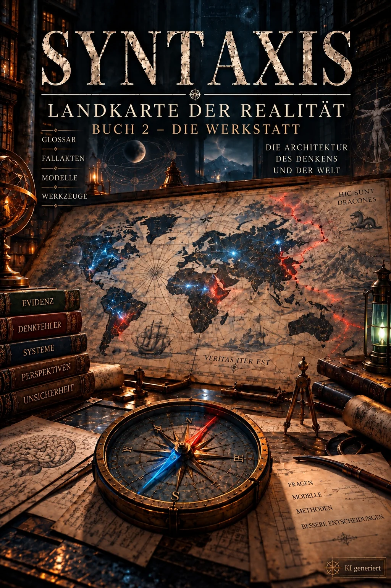
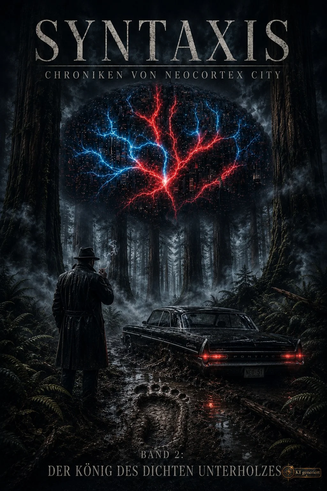
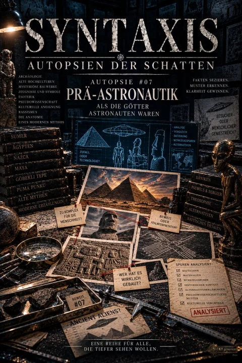
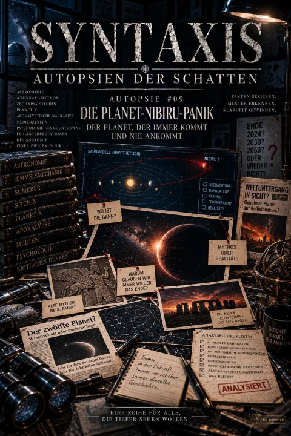
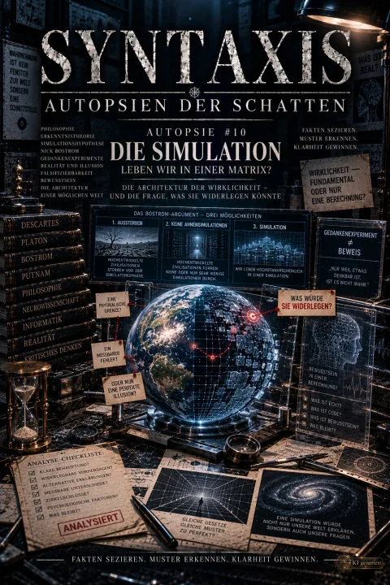

Downloads
Alle Werke, kostenlos, ohne Anmeldung. Reihe wählen, Format wählen, fertig.
Die Landkarte der Realität
CC BY-NC 4.0 Zur ReiheZwei Bücher, dazu die Gesamtausgabe. PDF ist die empfohlene Fassung, EPUB noch eine Testversion, ODT ist zum Bearbeiten in LibreOffice oder Word gedacht.
-
Buch 1 — Die Reise
Acht Bände, der Reihe nach zu lesen Stand: Etappe 75, 24.09.2026
Grau hinterlegte Formate sind noch nicht abgelegt.
-

Buch 2 — Die Werkstatt
Nachschlagewerk mit Glossar, Modell-Bibliothek und taktischem Kompendium Stand: Etappe 75, 24.09.2026
Grau hinterlegte Formate sind noch nicht abgelegt.
-
Gesamtausgabe — Buch 1 und Buch 2
Beide Bücher in einer Datei Stand: Etappe 75, 24.09.2026
Grau hinterlegte Formate sind noch nicht abgelegt.
Chroniken von Neocortex City
CC BY-NC-ND 4.0 Zur ReihePDF und EPUB. Bearbeitete Fassungen sind bei den Chroniken nicht freigegeben, deshalb gibt es hier keine ODT-Dateien.
-
Band I — Der Schatten über Dreamland
Area 51 und Bob Lazar Fassung 0.9.2 — Stand 28.09.2026
Grau hinterlegte Formate sind noch nicht abgelegt.
-

Band II — Der König des dichten Unterholzes
Bigfoot und das Patterson-Gimlin-Filmmaterial
Grau hinterlegte Formate sind noch nicht abgelegt.
-
Band III — Das Tier im Menschen
Werwolf und Vampirismus
Grau hinterlegte Formate sind noch nicht abgelegt.
-
Band IV — Was das Licht verspricht
Spuk, Séance und Ideomotorik
Noch keine Datei hinterlegt — dieser Band ist in Arbeit.
-
Band V — Der Nullpunkt
Pseudomedizin
Noch keine Datei hinterlegt — dieser Band ist in Arbeit.
Autopsien der Schatten
CC BY-NC 4.0 Zur ReiheJede Autopsie gibt es als eigenes Buch, dazu je Sektion einen Sammelband mit allen Fällen. PDF ist die empfohlene Fassung, EPUB noch eine Testversion, ODT ist zum Bearbeiten in LibreOffice oder Word gedacht.
-
Sammelband Sektion A — Der Kosmos voller Lügen
Alle zehn Autopsien der Sektion A in einem Buch
Grau hinterlegte Formate sind noch nicht abgelegt.
-
01 — Die flache Erde
Das Großprojekt der Selbstverblendung
Grau hinterlegte Formate sind noch nicht abgelegt.
-
02 — Die Mondlandungs-Lüge
Wie ein Triumph zur Verschwörung wurde
Grau hinterlegte Formate sind noch nicht abgelegt.
-
03 — Chemtrails
Der Krieg über unseren Köpfen
Grau hinterlegte Formate sind noch nicht abgelegt.
-
04 — Klimawandel
Desinformation und die thermodynamische Realität
Grau hinterlegte Formate sind noch nicht abgelegt.
-
05 — Die Hohl-Erde
Das Leben im Inneren
Grau hinterlegte Formate sind noch nicht abgelegt.
-
06 — Astrologie
Der kosmische Spiegel, der jedem schmeichelt
Grau hinterlegte Formate sind noch nicht abgelegt.
-

07 — Prä-Astronautik
Als die Götter Astronauten waren
Grau hinterlegte Formate sind noch nicht abgelegt.
-
08 — Roswell und die stillen Götter
Der Zwischenfall, der nie endet
Grau hinterlegte Formate sind noch nicht abgelegt.
-

09 — Die Planet-Nibiru-Panik
Der Planet, der immer kommt und nie ankommt
Grau hinterlegte Formate sind noch nicht abgelegt.
-

10 — Die Simulation
Leben wir in einer Matrix?
Grau hinterlegte Formate sind noch nicht abgelegt.
Licht der Realität
CC BY-NC 4.0 Zur Reihe-
Licht der Realität
Ein Mythos als Türöffner, dahinter die Wissenschaft, die ihn auflöst.
Noch keine Datei hinterlegt — dieser Band ist in Arbeit.
Welches Format ist das richtige?
PDF für Bildschirm und Druck, mit dem vorgesehenen Layout. Das ist die empfohlene Fassung. EPUB für E-Reader und Telefon; bei Landkarte und Autopsien noch eine Testversion. ODT zum Bearbeiten in LibreOffice oder Word, nur dort, wo Bearbeiten erlaubt ist.
Darf ich die Dateien weitergeben oder bearbeiten?
Weitergeben ja, überall: in die Klassencloud, an Freunde, ausgedruckt. Nur verkaufen darfst du sie nicht. Landkarte und Autopsien darfst du zusätzlich bearbeiten (CC BY-NC 4.0), wenn du Autor und Werk nennst und Änderungen kenntlich machst. Die Chroniken sind als Erzählung nicht zur Bearbeitung freigegeben, deshalb gibt es dort kein ODT. Lizenz im Detail
Wie kommt das EPUB auf meinen E-Reader?
Kobo und Tolino: per USB in den Ordner kopieren. Kindle: über „An Kindle senden“ oder per Kabel. iPhone und iPad: Datei in Apple Books öffnen. Android: etwa Lithium, Moon+ Reader oder Google Play Bücher.
Eine Datei ist grau oder etwas stimmt nicht
Graue Knöpfe bedeuten: Die Datei ist angekündigt, liegt aber noch nicht bereit. Führt ein Link ins Leere, ist eine Datei beschädigt oder fällt dir ein Fehler im Text auf, schreib bitte. Korrekturen fließen in die nächste Fassung ein.